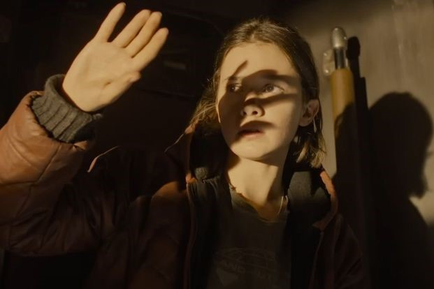
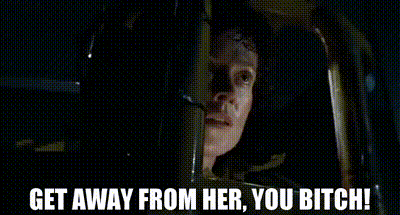

Alien Romulus (2014)
El legado de Ripley en el terror de una nueva generación
En Alien: Romulus, un grupo de colonos jóvenes queda atrapado en una estación espacial abandonada. En un entorno claustrofobia lleno de peligros, el grupo debe encontrar una forma de escapar mientras enfrenta tensiones internas y la constante amenaza de la criatura. La película combina terror clásico y acción, mientras explora las dinámicas humanas bajo presión extrema.
Rain vs. Ripley: ¿Un relevo justo?
Ellen Ripley (Sigourney Weaver) redefinió el arquetipo de la heroína de acción al ser una figura compleja que rompía con los estereotipos de género dominantes en el cine de los años 70. Ripley era una mujer pragmática, ingeniosa y emocionalmente resistente, cuyo heroísmo surgía no de una fuerza sobrehumana, sino de su capacidad de adaptación y su empatía. En cambio, Rain, aunque sigue esa línea de fortaleza, carece del mismo nivel de profundidad emocional. Su arco se siente más genérico, una protagonista fuerte diseñada para encajar con los estándares modernos, pero sin el trasfondo que hizo de Ripley un ícono para toda una generación.
A pesar de ello, Romulus merece crédito por intentar continuar la tradición de centrar a mujeres en roles de liderazgo y supervivencia. La película explora los dilemas morales de Rain y su lucha con el trauma de enfrentarse a los Xenomorfos, pero su desarrollo a veces se ve opacado por un guion que prioriza la acción y los efectos especiales sobre el desarrollo de personajes.
Efectos digitales: ética y estética en la resurrección de actores fallecidos
E uso de tecnología CGI para recrear el rostro de un actor fallecido ha provocado algún que otro debate en la comunidad cinefila. El actor Ian Holm, fallecido en 2020, es recreado como un androide que navegaba en la nave abandonada. En la primera pelicula de la saga Holm interpretaba a el andride del mismo modelo Ash. Aunque visualmente impresionante, esta decisión genera una sensación inquietante, tanto ética como estética. La digitalización de los rostros abre un debate sobre el consentimiento y el legado artístico: ¿es respetuoso "revivir" a un actor para un papel que nunca aceptó conscientemente?
En el caso de Romulus, aunque la tecnología es avanzada, la recreación carece de la humanidad. Esto podría parecer apropiado por un robot, pero en Alien: El octavo pasajero el personaje que interpretaba Holm era un androide imposible de distinguir físicamente de sus compañeros humanos, mientras que Rook parece totalmente antinatural debido a sus extraños movimientos de boca. y la naturalidad que hacían a los personajes originales tan memorables. Este androide, en lugar de rendir homenaje, resulta en un truco técnico que distrae de la narrativa.
Referencias al pasado: ¿Homenaje o dependencia?
Romulus está cargada de referencias a Alien, el octavo pasajero, desde el diseño claustrofóbico de sus escenarios hasta diálogos y momentos que evocan la desesperación de Ripley en la Nostromo. Sin embargo, estas referencias a veces parecen forzadas, como si la película dependiera demasiado del brillo de su predecesora para sostenerse. Una escena en particular—una persecución en un conducto de ventilación que evoca el enfrentamiento final de Ripley con el Xenomorfo—parece más un intento de nostalgia que una expansión narrativa genuina.
Por otro lado, el juego Alien: Isolation, con su protagonista Amanda Ripley (hija de Ellen), logra un equilibrio más efectivo entre el homenaje y la innovación. Amanda enfrenta los mismos peligros que su madre, pero su historia amplía el universo de Alien sin sentirse derivativa. La tensión y la inmersión del juego, además, superan a Romulus en su capacidad para capturar el terror psicológico de enfrentarse a lo desconocido.
Conclusión: entre lo viejo y lo nuevo
Alien: Romulus logra mantenerse fiel al espíritu de la franquicia al presentar una nueva protagonista, Rain, que honra el legado de Ellen Ripley mientras enfrenta desafíos propios. Aunque no alcanza la profundidad emocional de Ripley ni la inmersión atmosférica de Alien: Isolation, la película ofrece una experiencia emocionante que combina acción, terror y reflexión sobre la resistencia humana frente a lo desconocido. Sus efectos digitales, aunque divisivos, muestran el potencial de la tecnología para expandir narrativas, y las referencias a la película original, aunque a veces excesivas, servirán como un deleite para los fanáticos de siempre.
En su intento de reinterpretar el universo Alien para una nueva generación, Romulus ofrece una visión fresca y actualizada que, si bien no es perfecta, merece reconocimiento por su ambición y por mantener vivo el legado feminista de la saga. Una digna adición al universo de Alien que mezcla nostalgia y novedad con un equilibrio que, en su mayoría, funciona.